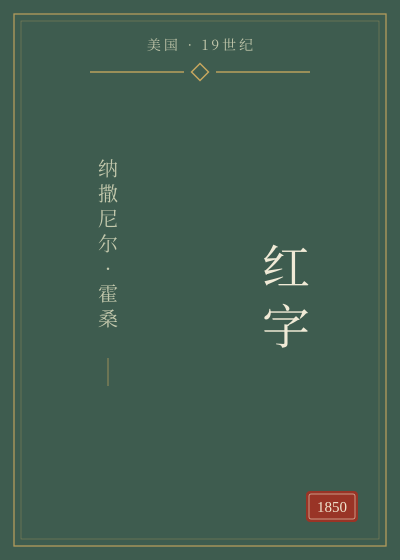

红字
一、基本信息
| 作者 | 霍桑 |
|---|---|
| 成书/出版 | 1850年出版（Britannica） Nathaniel Hawthorne — Encyclopaedia Britannica（百科全书） |
| 国别/地区 | 美国 |
| 时代 | 近代 · 19世纪 |
| 体裁 | 长篇小说（象征罗曼司） |
| 语言 | 英语 |

《红字》三角关系与红字（人物关系图）
二、创作背景
清教背景：1650年前后马萨诸塞湾殖民地波士顿——通奸的耻辱标记：'the scarlet letter A'（通说）。
作者（Britannica）：霍桑家族清教后裔——先祖参与1692年巫审（'one ancestor judged in the 1692 witch trials'）——家族衰败或为报应的猜想（Britannica）。
三、内容脉络
海丝特·白兰因通奸被判终身佩戴红字'A'（Adultery）；丈夫（罗杰·齐灵渥斯）隐姓埋名出现，追查情人（通说）。
牧师丁梅斯代尔——情人——内疚与自我折磨（通说）；齐灵渥斯以'医生'身份 psychological 折磨（通说）。
结局：丁梅斯代尔当众揭露红字（胸前纹印——通说）后死去；海丝特继续佩字行善成为' Sister of Mercy'——死后墓碑仅一个'A'（通说）。
四、主要人物表
| 人物 | 身份 | 说明 |
|---|---|---|
| 海丝特·白兰 | 通奸者·独母 | 耻辱标记佩戴者——以行动重新定义'A'（通说） |
| 丁梅斯代尔 | 牧师·情人 | 内疚与公开忏悔 |
| 罗杰·齐灵渥斯 | 丈夫·医生 | '复仇者'——心理折磨 |
| 珠儿 | 私生女 | '活的红字'（通说） |
五、主题与艺术特点
- 罪与耻的公共标记（通说）。
- 清教社会的伪善与人性（通说）。
- 象征主义：红字/珠儿/森林/白天黑夜（通说）。
六、影响与评论
- Britannica（Hawthorne 条）：The Scarlet Letter (1850) 列于 famous works；'widely considered among the greatest fiction writers of 19th-century America'。
Nathaniel Hawthorne — Encyclopaedia Britannica（百科全书） - 与梭罗/爱默生的康科德交往（Britannica：Knew Emerson and Thoreau in Concord）。
Nathaniel Hawthorne — Encyclopaedia Britannica（百科全书） - 中译：韩侍桁/姚乃强译本（通说待核）。
Nathaniel Hawthorne — Encyclopaedia Britannica（百科全书）
七、阅读建议
难点
- 17世纪清教殖民地背景——注释。
- '罗曼司'（romance）文体的边界——霍桑自序《海关》中界定。
- 韩侍桁译《红字》（上海译文出版社，通说待核）。
- 英文本：Norton Critical（通说待核）。
通读24章 → 精读'市场刑台'三场 → 对照爱默生/梭罗的超验主义。
八、待核实
- 1850年出版（Ticknor, Reed & Fields）细节待核。
- 韩侍桁译本信息待核。
- 《海关》序与'罗曼司'定义待核。